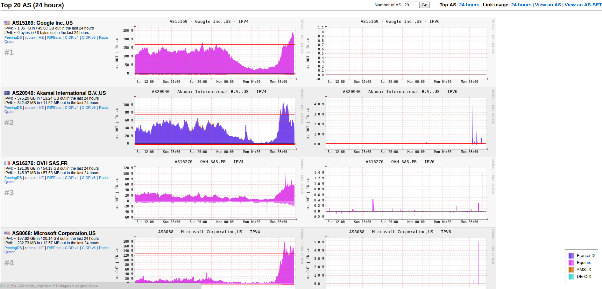

A simple tool to generate per-AS traffic graphs from NetFlow/sFlow records.
Update the package index for the APT package manager and install necessary packages:
$ sudo apt-get update
$ sudo apt-get install -y librrds-perl librrd-dev rrdtool apache2 php7.2 make gcc \
git libapache2-mod-php7.2 libnet-patricia-perl libjson-xs-perl libtrycatch-perl php7.2-sqlite3
The program comes with a default Perl installation, but you may need to install a few extra Perl modules. Check them from cpan:
$ sudo cpan install File::Find::Rule
$ sudo cpan install Net::sFlow
$ sudo cpan install IO::Select
$ sudo cpan install IO::Socket
$ sudo cpan install Scalar::Util
$ sudo cpan install DBI
$ sudo cpan install Try::Catch
$ sudo cpan install DBD::SQLite
$ sudo cpan install DBD::SQLite::db
Download AS-Stats from github:
$ cd /opt/
$ sudo git clone https://github.com/manuelkasper/AS-Stats.git
Put all the config and rrd files in an /opt/AS-Stats directory:
$ cd /opt/AS-Stats
Create a knownlinks file with the following information about each link that you want to appear
in your AS stats. We can use the sample knownlinks file and modify it:
$ sudo vi /opt/AS-Stats/conf/knownlinks
Delete all sample config and add the following line (replace 192.168.10.1 with your router IP).
# Router IP SNMP ifindex[/VLAN] tag description color sampling rate
192.168.10.1 1 uplink uplink A6CEE3 1
Get the SNMP index from your router. In this case, we are generating a graph on interface FastEthernet0/0, that’s why we use Ifindex 1 in the knownlinks file.
rtr1-gY#show snmp mib ifmib ifindex
GigabitEthernet0/1: Ifindex = 2
Null0: Ifindex = 3
GigabitEthernet0/0: Ifindex = 1
Create a directory to hold the per-AS RRD files:
$ sudo mkdir /opt/AS-Stats/rrd
$ sudo chmod 0777 /opt/AS-Stats/rrd
Now run the AS-Stats:
$ sudo /opt/AS-Stats/bin/asstatd.pl -P 0 -p 9000 -r /opt/AS-Stats/rrd -k /opt/AS-Stats/conf/knownlinks &
You might get the following error:
Can't locate ip2as.pm in @INC (you may need to install the ip2as module) (@INC
contains: /etc/perl /usr/local/lib/x86_64-linux-gnu/perl/5.26.1
/usr/local/share/perl/5.26.1 /usr/lib/x86_64-linux-gnu/perl5/5.26
/usr/share/perl5 /usr/lib/x86_64-linux-gnu/perl/5.26 /usr/share/perl/5.26
/usr/local/lib/site_perl /usr/lib/x86_64-linux-gnu/perl-base) at /opt/ASStats/bin/asstatd.pl line 16.
In that case run the following command:
$ cd /usr/share/perl/5.26/
$ sudo wget https://raw.githubusercontent.com/JackSlateur/perlip2as/master/ip2as.pm
Now try the /opt/AS-Stats/bin/asstatd.pl command again.
Check the process:
$ ps -ef|grep AS-Stats
root 19221 28478 0 01:40 pts/0 00:00:00 sudo nohup /opt/ASStats/bin/asstatd.pl -P 0 -p 9000 -r /opt/AS-Stats/rrd -k /opt/ASStats/conf/knownlinks
root 19222 19221 0 01:40 pts/0 00:00:00 /usr/bin/perl -w /opt/ASStats/bin/asstatd.pl -P 0 -p 9000 -r /opt/AS-Stats/rrd -k /opt/ASStats/conf/knownlinks
By default, asstatd.pl will listen on port 9000 (UDP) for NetFlow datagrams, and on port 6343
(UDP) for sFlow datagrams. Here we only enable NetFlow.
$ netstat -na | grep 9000
udp 0 0 0.0.0.0:9000 0.0.0.0:*
Now we will forward the flow. For this example, we will use the Flexible NetFlow command:
flow exporter AS-STATS
destination 192.168.10.10 !ip address of as-stats server
source GigabitEthernet0/1
transport udp 9000
!
flow monitor IPV4-AS-STATS
exporter AS-STATS
cache timeout active 300
cache entries 16384
record netflow ipv4 as
!
flow monitor IPV6-AS-STATS
exporter AS-STATS
cache timeout active 300
cache entries 16384
record netflow ipv6 as
!
sampler AS-STATS-SM
mode random 1 out-of 10000
!
interface GigabitEthernet0/0
ip flow monitor IPV4-AS-STATS input
ipv6 flow monitor IPV6-AS-STATS input
!
After three to four minutes, you should see RRD files popping up in the /opt/AS-Stats/rrd
folder. If you don’t, try checking with tcmdump . The following filter will help you to get the desiredoutput.
$ sudo tcpdump -i eth0 -n -vv -c 10 dst port 9000
tcpdump: listening on eth0, link-type EN10MB (Ethernet), capture size 262144 bytes
06:28:04.422335 IP (tos 0x0, ttl 64, id 45342, offset 0, flags [none], proto UDP (17), length 252)
127.0.0.1.52026 > 36.0.5.20.9000: [udp sum ok] UDP, length 224
06:28:04.426241 IP (tos 0x0, ttl 64, id 45344, offset 0, flags [none], proto UDP (17), length 208)
127.0.0.1.52026 > 36.0.5.20.9000: [udp sum ok] UDP, length 180
06:28:04.433539 IP (tos 0x0, ttl 64, id 19574, offset 0, flags [none], proto UDP (17), length 1428)
202.52.1.1.2056 > 36.0.5.20.9000: [udp sum ok] UDP, length 1400
06:28:04.433700 IP (tos 0x0, ttl 64, id 19576, offset 0, flags [none], proto UDP (17), length 1428)
202.52.1.1.2056 > 36.0.5.20.9000: [udp sum ok] UDP, length 1400
06:28:04.433821 IP (tos 0x0, ttl 64, id 19578, offset 0, flags [none], proto UDP (17), length 264)
202.52.1.1.2056 > 36.0.5.20.9000: [udp sum ok] UDP, length 236
06:28:04.433978 IP (tos 0x0, ttl 64, id 19580, offset 0, flags [none], proto UDP (17), length 1428)
202.52.1.1.2056 > 36.0.5.20.9000: [udp sum ok] UDP, length 1400
06:28:04.434127 IP (tos 0x0, ttl 64, id 19582, offset 0, flags [none], proto UDP (17), length 1428)
202.52.1.1.2056 > 36.0.5.20.9000: [udp sum ok] UDP, length 1400
06:28:04.434272 IP (tos 0x0, ttl 64, id 19584, offset 0, flags [none], proto UDP (17), length 1428)
202.52.1.1.2056 > 36.0.5.20.9000: [udp sum ok] UDP, length 1400
06:28:04.434419 IP (tos 0x0, ttl 64, id 19586, offset 0, flags [none], proto UDP (17), length 1428)
202.52.1.1.2056 > 36.0.5.20.9000: [udp sum ok] UDP, length 1400
06:28:04.458290 IP (tos 0x0, ttl 64, id 45347, offset 0, flags [none], proto UDP (17), length 208)
127.0.0.1.52026 > 36.0.5.20.9000: [udp sum ok] UDP, length 180
10 packets captured
10 packets received by filter
0 packets dropped by kernel
Add a cronjob to run the following command (preferably every hour).
$ sudo /opt/AS-Stats/bin/rrd-extractstats.pl /opt/AS-Stats/rrd /opt/AS-Stats/conf/knownlinks /opt/AS-Stats/asstats_day.txt
Enable the web interface to see all the graphs:
$ cd /opt/AS-Stats/
$ sudo cp -r www/ /var/www/html/as-stats/
Edit config.inc and set all the paths especially $rrdpath , $daystatsfile and
$knownlinksfile .
$ sudo vi /var/www/html/as-stats/config.inc
$rrdpath = "/opt/AS-Stats/rrd";
$daystatsfile = "/opt/AS-Stats/asstats_day.txt";
$knownlinksfile = "/opt/AS-Stats/conf/knownlinks";
Now, wait a few minutes to get enough flow data to generate your graphs. When ready, you can browse the web interface:
http://srvX.lab.shakya.io/as-stats/
The initial page will show you the Top 20 AS datasets for the last 24 hours.
